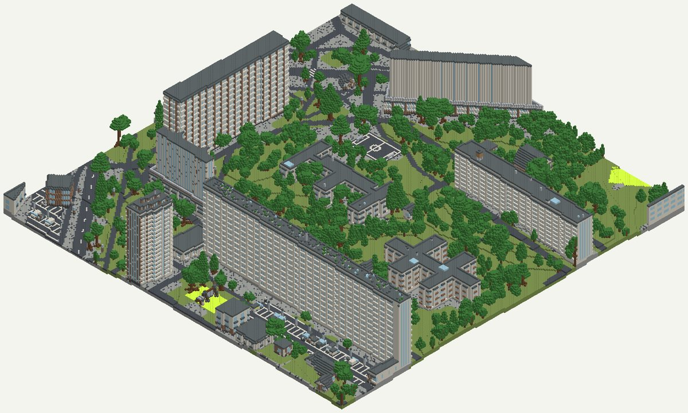
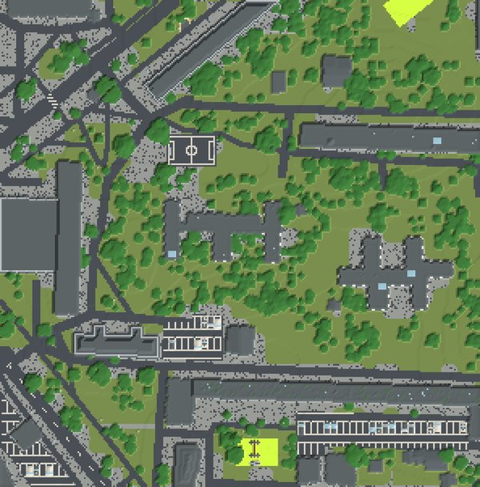

Твой двор в Майнкрафте 1:1
Программа Arnis берёт настоящую карту и рельеф и строит из них мир Minecraft, где один блок равен метру. Мы поставили её на Mac без установок в систему и собрали квартал панелек: вышло за 5 секунд. Ниже — как собрать свой.
- бесплатно, Apache-2.0
- Mac, Windows, Linux
- 300×300 м за 5 с
- без brew и sudo
К ролику «Двор из кубиков» · обновлено 27 октября 2026

Нужен Mac, Windows или Linux и терминал. Погулять по двору — Minecraft Java 1.21.4 или новее, игра платная. Minecraft мы сами не запускали.
Свой двор за 4 шага
прогнано— шаг мы выполнили сами 27.10.2026 на MacBook с M1 Max, Arnis v3.3.0. по документации— пересказ официальной вики Arnis, сами не запускали.
Поставьте Arnis
Только сам релиз с GitHub, один файл. Ни Java, ни Rust, ни brew не нужны.
прогнаноСкачивайте только со страницы релизов или arnismc.com: авторы пишут, что других официальных сайтов нет.
mkdir -p ~/arnis && cd ~/arnis
curl -L -o arnis-mac.tar.gz https://github.com/louis-e/arnis/releases/download/v3.3.0/arnis-mac-universal.tar.gz
tar -xzf arnis-mac.tar.gz
chmod +x arnis-mac-universal
./arnis-mac-universal --helpАрхив весит 63 МБ, у нас качался 28 секунд. Файл универсальный, работает и на M-чипах, и на Intel. Новее v3.3.0 может выйти релиз: номер смотрите на странице релизов.
по документацииWindows: файл arnis-windows.exe с той же страницы. Linux: arnis-linux.tar.gz. Команды те же.
по документацииЗапуск без параметров открывает окно с картой: выделяете прямоугольник и жмёте «Start Generation». Окно мы не открывали, всё делали командой из терминала.
--help печатает список флагов. Если macOS не даёт открыть файл, см. «Если застряли».
Выберите двор
Arnis понимает прямоугольник из четырёх чисел.
Порядок: южная широта,западная долгота,северная широта,восточная долгота.
- Откройте openstreetmap.org и найдите двор. Посмотрите, нарисованы ли там дома, дорожки, площадки. Чего нет на карте, того не будет в мире.
- Правый клик по центру двора → «Показать адрес». Слева появятся координаты, например
55.88700, 37.60500. - Для квадрата примерно 300×300 м отнимите и прибавьте к широте 0,00135, а к долготе 0,0024. Это для Москвы: на севере шаг по долготе больше (Питер 0,0027), на юге меньше (Краснодар 0,0019).
Наш квадрат, квартал панелек в Бибирево:
55.88565,37.60262,55.88835,37.60738Мы пробовали четыре района Москвы. В Северном Чертаново квадрат попал в парк, в Марьино и Ясенево на магистраль и стадион. Бибирево дало тот самый двор: длинные панельные многоэтажки, башня, школа, детсад, коробка, парковки. Каждый пробный прогон занимает секунды, так что подбирайте квадрат пробами.
Соберите мир
Одна команда, подставьте свои четыре числа.
прогнаноВместо ~/arnis/worlds можно сразу указать папку сохранений Minecraft, она в шаге 4.
mkdir -p ~/arnis/worlds
~/arnis/arnis-mac-universal \
--bbox="55.88565,37.60262,55.88835,37.60738" \
--output-dir="$HOME/arnis/worlds" \
--map-previewФлаг --map-preview кладёт рядом картинку arnis_world_map.png с видом сверху: по ней видно, тот ли двор попал в квадрат, ещё до запуска игры.

Полезные флаги из --help: --interior (комнаты внутри домов), --winter (зима), --bedrock (мир для Bedrock: телефон, консоли, Windows), --scale 0.5 (вдвое меньше).
В папке появится «Arnis World 1»: это и есть мир для Minecraft Java. Рядом arnis_world_map.png. У нас первый мир 300×300 м собрался за 4,7–5 с.
Откройте мир в Minecraft Java
Скопируйте папку мира в сохранения игры.
по документацииMinecraft мы не запускали: мир проверили своим скриптом, он прочитал файлы мира и отрисовал картинки выше. Дальше пересказ вики Arnis и вики Minecraft.
- Нужна Minecraft Java Edition версии 1.21.4 или новее. Игра платная, покупается на minecraft.net.
- Скопируйте папку «Arnis World 1» в папку сохранений:
- Mac:
~/Library/Application Support/minecraft/saves - Windows:
%appdata%\.minecraft\saves - Linux:
~/.minecraft/saves
- Mac:
- Запустите игру → «Одиночная игра» → мир «Arnis World 1». Если генерировали несколько раз, номер в названии растёт: берите последний.
- Вы появитесь в углу участка в творческом режиме. Двор лежит от вас в сторону растущих X и Z.
Для Bedrock соберите мир с флагом --bedrock: получится файл .mcworld (по умолчанию на Рабочем столе), его импортируют в игру. Нужна Bedrock 1.21.0 или новее.
Или попросите Claude: «Поставь Arnis»
прогнаноШаги 1–3 и замер времени у нас выполнил агент Claude Code по похожей просьбе: сам нашёл релиз через GitHub, скачал в отдельную папку, собрал мир и замерил время. Промпт для Claude Code:
Поставь Arnis (github.com/louis-e/arnis) на мой Mac и собери мне мир Minecraft моего двора.
Правила:
- Ничего не ставь в систему: без brew, sudo и глобальных установок.
Только готовый релиз с github.com/louis-e/arnis/releases в папку ~/arnis.
- Перед запуском покажи мне вывод --help и версию.
- Мир собирай из терминала, без окна: --bbox и --output-dir, плюс --map-preview.
Двор: [район или координаты центра двора].
Возьми квадрат примерно 300 на 300 метров вокруг этой точки.
Покажи картинку arnis_world_map.png и спроси, тот ли это двор.
Если двор не попал или там пусто, сдвинь квадрат и собери заново.
В конце скажи, сколько заняла генерация и куда скопировать папку мира,
чтобы открыть её в Minecraft Java.Сколько ждать
прогнаноНаши замеры, MacBook M1 Max, домашний интернет:
| Что | Время |
|---|---|
| Скачать Arnis (63 МБ) | 28 с |
| Первый мир 300×300 м | 4,7–5 с |
| Тот же квадрат ещё раз | 1,6 с |
| Размер готового мира | 1,5 МБ |
Повтор быстрее, потому что Arnis кэширует скачанные карты в ~/Library/Caches/arnis*, у нас набралось 22 МБ. Удалить кэш можно командой rm -rf ~/Library/Caches/arnis*. Большой район или целый город займут заметно дольше: мы мерили только двор.
Права и откуда данные
Arnisоткрытый код, Apache-2.0
Бесплатная программа с открытым кодом, лицензия Apache-2.0. Миры можно показывать в роликах. Если распространяете сам код или свою переделку, приложите текст лицензии.
КартаOpenStreetMap, ODbL: подпись обязательна
Дома, дороги и деревья берутся из OpenStreetMap, лицензия ODbL. Показываете мир, указывайте «© участники OpenStreetMap» (openstreetmap.org/copyright). Arnis читает OSM не напрямую, а из своего архива: правки, внесённые в карту сегодня, появятся после его пересборки.
Рельеф и остальноеMapterhorn, ESA WorldCover, Meta/WRI, Overture Maps
Высоты: Mapterhorn (основа Copernicus GLO-30 и национальные данные, где они есть). В Москве у нас пришли только крупные тайлы, так что рельеф во дворе грубый, перепад 9 м. Ещё Arnis берёт покрытие земли ESA WorldCover, высоту деревьев Meta/WRI и недостающие дома из Overture Maps (в нашем квадрате добавилось 8). Полный список: вики Arnis, Data Sources.
MinecraftMojang и Microsoft
Игра и её текстуры принадлежат Mojang и Microsoft. На картинках этой страницы их нет: цвета блоков свои.
Если застряли
macOS не даёт открыть Arnis
по документацииЕсли скачали архив браузером, macOS скажет, что не может проверить программу: сборка не заверена в Apple. Вики Arnis советует открыть файл один раз, закрыть предупреждение и нажать «Всё равно открыть» в Системных настройках → Конфиденциальность и безопасность. Второй вариант: xattr -d com.apple.quarantine ~/Downloads/arnis-mac-universal. При скачивании через curl, как в шаге 1, у нас предупреждения не было.
Генерация встала на 10 %
по документацииЭто скачивается рельеф. Вики советует флаг --aws-only-elevation (в окне: Settings → Advanced → Legacy terrain), а если не поможет, VPN.
В квадрат попал парк или магистраль, а не двор
Посмотрите arnis_world_map.png, сдвиньте квадрат и соберите заново: каждый пробный прогон занимает секунды. Чего нет на карте OpenStreetMap, того не будет и в мире.
Ограничения
- Minecraft мы не запускали: мир проверили своим скриптом. Шаг 4 — пересказ вики.
- Мерили только двор 300×300 м. Большой район или целый город займут заметно дольше.
- В Москве рельеф грубый: пришли только крупные тайлы, перепад 9 м.
- Свежие правки карты появятся в мире только после пересборки архива Arnis.